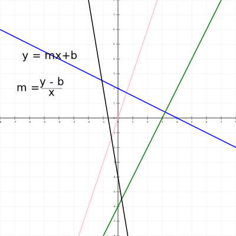
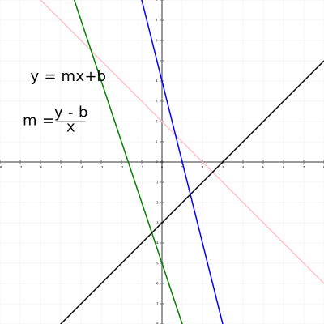

Grün
$$m = \frac{0-(-6)}{3} = 2$$ oder $$m = \frac{0+6}{3} = 2$$
Blau
$$m = \frac{0-2}{4} = -0.5$$
Pink
$$m = \frac{3-0}{1} = 3$$
Schwarz
$$m = \frac{2-(-4)}{-1} = -6$$

Grün
$$m = \frac{1-(-5)}{-2} = -3$$
Blau
$$m = \frac{0-4}{1} = -4$$
Pink
$$m = \frac{0-2}{2} = -1$$
Schwarz
$$m = \frac{0-(-3)}{3} = 1$$